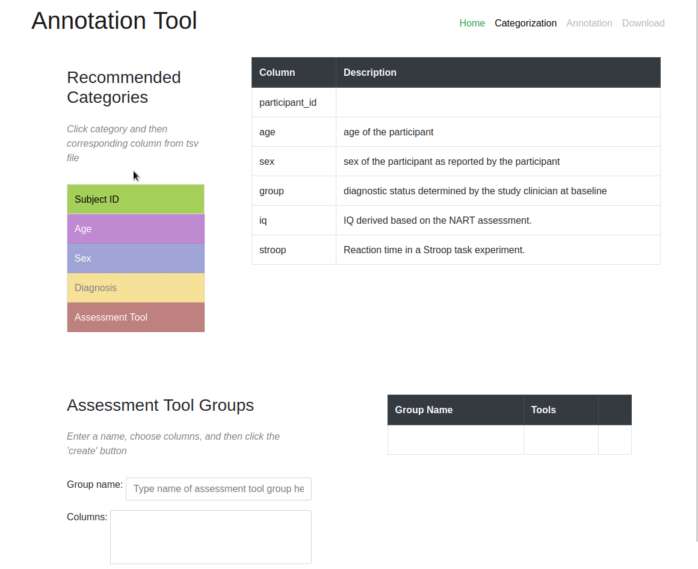

Annotation Tool
The Neurobagel annotation tool allows upload of BIDS phenotypic metadata and guides users through a multistep process that ends in an annotated output file compatible with the our harmonized metadata model and graph database. Once this occurs, a user’s dataset will be queryable alongside other datasets via our Cohort Definition Tool. The annotation process itself has been simplified via our user interface into two discrete steps: categorization and annotation.
- Upload a BIDS data table (e.g. ‘participants.tsv’) and data dictionary (e.g. ‘participants.json’).
- Link columns in the data table to Neurobagel data categories (subject ID, age, sex, diagnosis, assessment tools). Tools split across multiple columns can be grouped together.
- Harmonize values found in those categorized columns in the data table.
- Review newly-annotated data and download a file for entry into our graph database where it can be used by our tool for cross-cohort search and definition.
See the animated demo of our user interface below!
